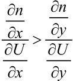
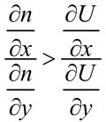

旅途指南
本章介绍效用品理论。这本来是对传统模型所做的一个简单而普通的拓展，用来弥补马尔萨斯在解释古代人均收入变化时与事实的出入。但这个理论可以引出平衡增长之谜，这个未解之谜危及马尔萨斯理论的核心。
第3章将会讨论效用品理论的生物学基础，第4章则会推翻第1章所陈列的看似支持马尔萨斯理论的证据。
在开始本章的阅读前，我先解释一下这三章的顺序安排。本来，我应该紧接着第1章对马尔萨斯理论证据的介绍，直接指出那些证据中的错误。可是，要理解这些错误，我们需要新的理论框架——基于两部门模型的效用品理论。所以，我先在第2章介绍效用品理论，有了理论基础后，再在第4章去点破那些证据中的谬误。
我把效用品理论的生物学基础作为第3章。如果本章读到一半，读者想知道我为什么这么划分经济部门——在无数划分两部门的方式里为何偏偏选中这一种-不用着急，第3章会提供一个圆满的答案。
为什么我必须先介绍效用品理论，再讨论它的生物学基础呢？因为，模型是假设的意义与归宿。从人的认知心理来说，意义应该走在论据的前头。如果按照学术论文的习惯，先讨论假设，再呈现模型，会让普通读者摸不着头脑，不知道那些讨论的意义何在。所以我先介绍模型，再在第3章里有的放矢地推敲模型的假设是否合理。阅读本章的两部门模型时，请不用担心它是空中楼阁。该有的现实基础、证据、理论之何以“非如此不可”，都会在第3章的生物学基础里得到呈现。
我最初察觉到马尔萨斯模型的不妥，是因为读了管汉晖博士和李稻葵教授的论文《明代GDP试探》。李稻葵教授是我在清华大学经管学院读本科时的老师；管汉晖是他的博士后，后来任教于北京大学经济学院，曾是我的同事。管汉晖和李稻葵指出，麦迪森对明代人均GDP（国内生产总值）的估计偏高[1]。
估算古代社会GDP是一项费力不讨好的工作。他们需要找来历史记载，估算各种产品的产值。能找到资料的，大多数是农产品。算完这部分后，要获得整个经济的产值，就得推敲这些产品占经济的比重。由于还没有可靠的数据来估计工商业和农业的比例，GDP确切该有多少，当年那篇论文并没有拿定一个数字。没有数据，只能靠推测。有人说农业占90%，有人说50%，说来说去都是拍脑瓜。
显然，要估算古代社会的GDP或人均收入，最重要的就是搞清楚工商业占经济的比重。农业产量的数据比较丰富，可是就算把农业的数据搞得再清楚，一个人每天摄入的卡路里也总在2 000大卡上下。一个社会再富有，人也不能多出一只胃来。到头来，人均收入是高是低，还得看工商业的比例。举个最简单的例子，假如宋代的工商业比例高于明代的，那么只要宋代人消费的农产品不低于明代，宋代的人均收入当然就高于明代。
我当时恰好在读克拉克教授的A Farewell to Alms，很为之着迷，就把这和马尔萨斯理论联系在一起。按照马尔萨斯模型，一个社会人均收入高于另一个社会有哪些可能的原因呢？套用克拉克教授在书中罗列的因素，是宋代历史太短，人口压力未及浮现，还是宋代人不爱洗澡、晚生晚育、瘟疫流行、战争频仍？好像都不太合理。
要问宋代人均收入和明代的比较，略知历史的中国人大概都会说，这很明显啊，宋代实行的是市场经济，明代至少在初期实行的是统制经济，宋代怎能不富，明代怎能不穷？可是按照马尔萨斯模型，市场经济充其量只会增加人口密度和经济总量，对人均收入并无长期影响。克拉克教授甚至说，亚当·斯密1776年发表的《国富论》对他所处时代的人均收入增长没有指导意义（原话是“pointless”）。难道我们对宋代的固有印象错了，其实宋代的人均收入并不比明代高吗[2]？
[1]此结论在他们后来的研究中有所改变。
[2]和大多数经济史课题一样，宋代和明代的经济比较尚无定论。本书采信的观点是，宋代的人均收入高于明代，宋代的工商业比起明代的占经济更高的比重，宋代的科技进步速度高于明代。但我并不认为宋代的经济总量和工商业产值一定超过明代（明代面积更大，人口更多），也不认为宋代的科技绝对水平（无论是农业技术还是工业技术）一定超过明代。“宋粉”“明粉”相互较真的，一般都是经济总量和科技水平孰高孰低。对于这些问题，我并不采取任何立场，它们和本书也没有关系。但是我反对概念的混淆：有些“明（宋）粉”以明（宋）代科技和经济总量的优势为论据，意图论证明（宋）代人均收入也更高，这显然是偷换了概念。享誉世界的经济史学大师李伯重教授曾有一文，即《“选精”、“集粹”与“宋代江南农业革命”——对传统经济史研究方法的检讨》，特地指出宋代经济史研究者人为筛选样本以致高估宋代亩产的错误。本书对宋代的描述，可能也有“选精”“集粹”之嫌。好在宋、明比较只是本书立论的一个灵感来源，而不是立论的根据。如果有朝一日，宋明间的比较彻底翻案，本书的案例当然需要改写，但理论仍可保全。不过，李伯重教授的发现亦有被过度解读的危险。李伯重教授在文章中用宋代较低的亩产否定了宋代的农业革命（尚属合理），进而否定了商业革命和经济革命的可能（此论勉强）；而读者进一步引用该文章来否定宋代拥有更高人均收入的可能，这大错特错。李伯重教授认为宋代经济既然是一个农业经济，其他经济部门必然只占有很小的比例，商业革命、经济革命必俟农业革命的发生而后动。此论似有受马尔萨斯理论禁锢之嫌。
心有块垒，不除不快。于是我对马尔萨斯模型做了一个小小的改动，来解释古代社会间人均收入的差别：我假设单位价值的不同商品对人口增长的影响是不一样的。比如包子和棉袄对人口增殖很有意义，而金银首饰、奇山怪石、杂耍曲艺对人口增殖就没什么影响——我把传统模型里单一的商品部门划分为两个商品部门，前者叫生存品部门，后者叫效用品部门。
这么简单的一个改动会带来什么结果呢？不妨先拿一个寓言式的小模型来热热身。让我们设想一个小岛，岛上每天出产a个椰子。假使一个椰子就能养活一个人，那么这个岛就能养活a个人。椰子多了人就多，椰子少了人就少。椰子的产量再怎么提高（比如从a增长到2a），到头来每个人享用的椰子还是一个，因为人口也跟着增长（也从a增长到2a）。这就是所谓的马尔萨斯效应——社会发展、市场扩张、技术进步只能提高椰子的总数量，却不能提高均衡状态的人均椰子数，即人均收入。
现在，我们假设小岛上除了椰子以外每天还出产b朵一日一谢的玫瑰花。玫瑰花能带给人愉悦，但不能果腹。显然，当马尔萨斯效应限制每个人只能享用一个椰子时，人均幸福程度完全由人均玫瑰花决定。既然人口数量长远来说等于椰子数量a，那么人均玫瑰花数量长远来说就等于b与a之比（b/a），即玫瑰花与椰子的比例。这个比值增加，均衡人均福利就提高；这个比值下降，均衡人均福利就下降。
马尔萨斯效应只能限制人均椰子的数量（一个），却不能限制人均玫瑰花的数量。马尔萨斯理论的核心假说——所谓技术进步不影响长远的人均福利——只在a、b同步变化时成立。只要椰子和玫瑰花出产的变化不同步，均衡人均福利就会发生变化，而导致这种非同步变化的因素实在太多了。比如，玫瑰花增产（技术进步）可以提高人均福利，椰子减产（技术衰退）也可以提高人均福利，人们因为更喜欢玫瑰花而把本来种椰子的土地改造成玫瑰花园（文化变迁），更能提高人均福利。
如果把椰子看作农业品，用玫瑰花比喻制造业和服务业，那么古罗马和宋朝之所以富，就是因为这两个社会里玫瑰花相对于椰子的比例比较高。这种由于产出结构偏向性而造成的高福利，马尔萨斯效应是无法抹除的。
用寓言做模型有助于形成直觉，但失之精确，毕竟大多数商品对人口增长的影响只有相对程度之分。单位价值的牛肉带来的饱腹感虽不及土豆，但也是一种食物。这些因素会影响模型的结论吗？这是寓言模型难以回答的。所以，下面我会介绍一个几何版的两部门马尔萨斯模型。这个几何模型是本书后续讨论的基础，我会一步步引导你掌握这个模型。如果条件允许，请一边阅读一边跟着把模型推演一遍，以确保完全理解和熟练应用。撇开功利的目的，推演这个模型好似玩半小时数独，本身也是很有趣的一件事。
对学过经济学的读者来说，图2.1是很熟悉的。不过，考虑到有些读者没有接触过经济学，我要做简单的讲解。图2.1是一个坐标系，表示的是一个人的产出和消费集合。假设社会里每个人都一样，所以坐标系表示的是整个社会的人均产出和人均消费——请注意，是人均。再假设，这个社会里只有两种产品，即农业品和工业品。横轴代表这个典型个体所消费的农业品（类似于椰子），纵轴代表他消费的工业品（类似于玫瑰花）。在这个坐标系上随便取个点，比如（1，1），就表示这个“平均人”消费1单位的农业品和1单位的工业品。
图2.1画了两条曲实线，下面的往上弓起的曲线叫作生产可能性边界（Production Possibility Frontier，简称PPF）。顾名思义，生产可能性边界刻画的是生产可能性。名为边界，是因为给定技术、资源和人口后，只能在生产可能性边界左下区域的点生产，无法在右上区域的点生产。生产可能性边界之所以向右上凸起呈弓形，是因为我沿用经济学中一般的假设：生产资料对不同的产品有适用性的差异，比如山区更适合采矿、生产工业品，平地更适合种植、生产农业品。如果没有这种适用性的差异，工业品和农业品永远可以按照固定的比例兑换——好比少生产1单位农业品，就能多生产10单位工业品，那么生产可能性边界就应该是一条斜率为-10的直线。但因为不同资源适合生产不同的东西，所以如果现在一声令下，无论山地还是平地都要用来生产庄稼，那么到后来即使损失很多的工业品产量，也换不回多少农业品的增加。因此，生产可能性边界越接近坐标轴，就越往里拐，呈弓形。
图2.1 二元模型
这个模型假设社会里每个人都一样，没有阶级、地域的差别，也无须相互贸易，所以生产可能性就等同于消费可能性。灰色区域既是“典型个体”的生产可能性集合，也是他的消费可能性集合。那么，这个典型个体在生产可能性边界以内，到底会选择哪个点来消费呢？
这取决于他的偏好。经济学用无差异曲线来描绘一个人的偏好。无差异曲线并不是一条线，而是无数条“等高线”。什么叫无差异曲线？你可以想象，在第一象限里，这个个体最喜欢的当然是正无穷多的农业品加上正无穷多的工业品，最不待见的当然是（0，0）。在这两个极端之间，我们用曲线连缀起所有满意度（效用程度）相等的消费点，就会形成一整簇无差异曲线。无差异曲线也叫作等效用曲线——线上各点的效用值相等。比方说某个人认为三件农业品、两件工业品（3，2）与一件农业品、六件工业品（1，6）提供的效用是相同的，那么点（3，2）和点（1，6）就应该在同一条无差异曲线上。如果这个个体是个正常人，喜欢两种商品都多多益善，那么无差异曲线全都应该向下倾斜，且不会相交，位置越高的无差异曲线代表效用越高。
一般来说，我们都不喜欢只有一种产品。光有农业品的日子太单调，光有工业品的日子难以活命，最好什么都来一点儿，“允执其中”。这种中庸偏好就表现为无差异曲线的“肚子”会向左下凸出。经济学上管这叫“边际替代率递减”：一个产品对另一个产品替代着替代着就不那么好使了，所以什么都得来一点儿。比如一个什么都来两个的组合（2，2）也许抵得上（1，5）或（5，1）带来的满足感。
在这个模型里，我们能做哪些推理？首先，这个典型个体肯定会选择生产可能性边界上的点来消费，因为相对任何低于边界、在灰色区域中的消费点，都存在一个处于边界上的点，其同时包含更多的农业品和更多的工业品。聪明人不会浪费这个差额。其次，这个人一定会在生产可能性边界上挑选效用最高的点，也就是尽可能触碰到最高的那条无差异曲线的那个消费点。而满足这一条件的消费点，正是生产可能性边界和最高的那条无差异曲线的切点（图2.1中的E点）。这个切点，因为是典型个体的最优选择，所以包含了人均福利的所有信息：消费多少农业品，多少工业品。
到这里为止，本书介绍的都是大学本科一年级经济学原理课的内容。唯一的区别是，在经济学原理课上，这个坐标一般表示整个经济的总生产和总消费；而在这里，这个坐标表示的是人均生产和人均消费。
这个小小的差别里，就产生了马尔萨斯效应：产出与人口在短期内无法等比例变化，所以人口的增减会影响人均生产可能性边界的位置。（下文的“生产可能性边界”，若非特别指出，指的都是人均边界，而不是总量边界。）
如果人口增加，社会生产可能就会扩张一些，但扩张的比例赶不上人口的增长率（比如人口增加10%，产出只增加5%）。于是，人均拥有的资源就减少了，人均生产可能性边界，同时也是消费可能性边界，就会萎缩，最优消费点当然也随之下降。反之，如果人口减少，人均生产可能性边界就会向外扩张，最优消费点也随之上升。
与此同时，人均消费的变化也会反过来影响人口的增长。让我们用第三条线来刻画这一点，这条线不曾在经济学原理课中出现。一画上这条线，这个模型就灵动起来了。这条线就是图2.2中的人口平衡线。
人口增长率既然取决于人均消费的农业品和工业品，我们自然可以在坐标系里找出一组点；在这些点所对应的人均消费组合上，人口增长率为零，即人口平衡。在这条线的右边，人均消费大于维持人口的需要，人口就会增加；在这条线的左边，人均消费不足以维持人口的平衡，人口就会减少。这条线比无差异曲线更陡峭，接近垂直，这是因为农业品比工业品对人口的增长更为重要（如果无差异曲线比人口平衡线更陡峭，那就相当于把工业品和农业品交换位置；纵横轴标签互换，并不影响分析）。在椰子和玫瑰花的案例里，玫瑰花对人口增长完全没有作用，对应的人口平衡线就是垂直的。这个几何模型允许人口平衡线倾斜，是为了照顾模型的一般性，毕竟有些工业品对生存繁衍也有一定价值，只是效用不及农业品而已。图中人口平衡线稍稍凸向原点，原因和无差异曲线向左下凸出一样，也是“边际替代率递减”[3]。
图2.2 人口平衡线
有了这三条线，我们的模型就搭建起来了。如图2.3（a），我们把生产可能性边界、无差异曲线和人口平衡线全部画到同一个图中。这就引出了第一个小命题：经济的均衡一定在人口平衡线之上。均衡处，无差异曲线与生产可能性边界相切，且切点恰好落在人口平衡线上。
为什么会这样？设想，如果人均消费点（无差异曲线与生产可能性边界的切点）出现在人口平衡线的右边，如图2.3（b）中两条虚线的切点E’，人均消费超过了维持人口平衡所需要的资源数量，那么人口就会增加，生产可能性边界萎缩，人均消费点也随之向左下移动，直到撞上人口平衡线，人口不再变动为止。同理，如果人均消费点出现在人口平衡线左边，人均消费不足以维持人口，那么人口就会下降，生产可能性边界扩张，人均消费点也会随之向右上方移动，一直到撞上人口平衡线为止。所以，经济的均衡一定在人口平衡线上。
这是一个马尔萨斯均衡，包含了马尔萨斯模型的基本结论。比方说，现在有一场突如其来的灾荒削减了一部分人口，使图2.3（b）中的生产可能性边界向外扩张，人均消费点从原来的均衡位置E移动到了右上方E’，短期内人均消费提高。但是E’在人口平衡线右方，所以人口增加，生产可能性边界萎缩，经济又会随着人口的增加从E’重归人口平衡线。为了分析的简便，我们假设生产可能性边界在人口增减的过程中并不会改变其形状（用术语说就是产出结构对人口是中性的），那么等到尘埃落定，经济仍将回到最初的E点：灾荒并不能改变人均消费、收入或福利。同样的分析也完全适用于任何不改变生产可能性边界形状的技术进步。人口增长最终会吞噬技术进步对人均收入的短期影响。
图2.3 为什么均衡必居人口平衡线之上
但是，如果有一种新技术，只促进了工业品的生产效率，却没有影响农业，那会怎么样？
图2.4就描绘了这样一种纯工业技术带来的冲击。生产可能性边界会向上扩张——给定资源，这个典型个体能够生产更多的工业品了。短期内，生产可能性边界与无差异曲线的切点从E移动到了E’，人均效用提高。由于E’暂处人口平衡线的右方，人口随之增长，生产可能性边界等比例向下萎缩，经济从E’点又掉落到人口平衡线上。因为生产可能性边界的形状变得更加高瘦，掉落点E”（新的均衡）会比旧均衡E点位置更高，对应的人均效用也更高。与马尔萨斯理论的传统结论不同，技术进步居然能够影响均衡人均效用。
图2.4 工业技术进步带来均衡人均福利的提高
较真的读者可能会不服气。E”之所以比E高，是因为这幅图画成了这样，要是换个画法，没准E”还能比E低呢。
这是很好的质疑。你不妨试试看，有没有办法在生产可能性边界等比例回缩后，使新均衡E”点比E点更低？
试过了吗？还真的画出来了吧？只是你的图很别扭，是不是？
本书附录里有一个证明：这种异常情况的确有可能发生，但发生的前提条件是存在多重均衡，而存在多重均衡的前提是生存品是吉芬物品[4]。吉芬物品在经济学里很罕见，而且这两个前提都还只是必要非充分条件，所以这种异常情况极为罕见，我们根本不用担心上述结论的一般性。但为了理论的严密性，我在附录里会对吉芬物品这种反例做进一步的讨论。
上面这个模型已经能部分解释为什么宋代、明代虽然都处于马尔萨斯均衡，但前者的人均收入可以高于甚至远高于后者。市场经济能够促进工业发展，也能促进农业发展，但市场经济对工业的促进作用大于农业[5]。只要市场经济改变了社会的产出结构，使之更偏向于工商业，那么即使在马尔萨斯条件下，市场经济仍然能够提高均衡人均福利。
我这里使用人均福利（效用）而非人均收入，看似有标准不一之嫌，但是，马尔萨斯模型中之所以用收入的概念，只是因为收入是对效用的一个近似，而效用才是经济学谋求改进的终极对象。传统模型是欲用“效用”而不得。倘若定性分析允许我们对效用的增减得出清晰的结论，我们当然要优先使用效用（福利）这个概念。
工业技术提高均衡人均福利。如果是农业技术进步了，均衡又该如何变化呢？与工业技术相反，农业技术会把生产可能性边界横向拉长[见图2.5（a）]，短期内经济从E移动到E’，人均福利提高。但是增加的人口使生产可能性边界等比例回缩，使均衡回落到人口平衡线上（落点为E”）。由于生产可能性边界的形状变得更加扁平，新均衡E”点比同在人口平衡线上的旧均衡E点位置更低，对应的生活水平更差。农业技术进步反而造成长期内人均福利的下降。这听来匪夷所思，却是历史上频繁发生的事情。
图2.5 农业技术进步降低均衡人均福利
前言里提到，农业革命后农民的生活水平比起从事狩猎采集的祖先显著下降，其实原因就在这里。无独有偶，番薯、土豆、玉米、花生这些新大陆的旱地作物在引入旧大陆后，也曾在部分地区造成贫困的加深。爱尔兰在19世纪中叶大饥荒前的两个世纪内，人口翻了两番，土豆占到了食物的九成以上。土豆营养极为丰富，人口因之猛增，但人口膨胀使19世纪上半叶的爱尔兰陷入贫穷（Mokyr, 1981）。
纵轴和横轴上的这两个商品不一定非得是农业品和工业品，经济中许多事物都能够在这个图中得到表达。比如，讨论18世纪爱尔兰人的饮食选择时，横轴可以是土豆，纵轴可以是更美味的牛肉（Davies, 1994）。研究家庭的生育决策时，横轴可以是“孩子的数量”，纵轴是“孩子的质量（教育）”（Becker, 1960）。探讨贫富差距时，横轴可以是穷人的收入，纵轴是富人的收入——富人的收入转化为食物的比例较低，存效比低于穷人的收入[6]。
数学上也可以严格地区分两个部门：只要经济中不同商品间存在“边际存效比”——边际生存繁衍价值与边际效用价值的比例〔用U表示典型个体的效用函数，x、y表示两种产品的人均消费，n表示一个群体的人口增长率。U和n都是x与y的函数。产品x的边际存效比高于产品y（x相对于y是生存品）可以表示为不等式，整理此式为，亦即（x,y）点处人口平衡线斜率的绝对值＞（x,y）点处无差异曲线斜率的绝对值。此不等式表示，在（x,y）点人口平衡线从上方与无差异曲线相交。〕的差异，那么边际存效比相对较高的那一类产品就可以放到横轴上，比如农业品、椰子、土豆、孩子的数量，而边际存效比相对较低的那一类产品就可以放到纵轴上，比如工业品、花朵、牛肉和孩子的质量。打个比方，一场马戏表演的门票是100元，一袋大米也是100元，两者价值相等，反映出它们给人带来的边际效用相当。但是马戏表演对生存繁衍的边际价值（数学上表达为该产品的人均拥有额对人口增长率的边际影响）显然低于100元的大米，所以马戏表演的边际存效比就低于大米。理论上说，忽略人与人的差别后，经济中所有的商品都可以在边际上度量出存效比。按照这个比例从低到高排列，我们就得到了一个“效用品——生存品”的序列[7]。一个商品是效用品[8]还是生存品都是相对而言的，比如牛肉相对于土豆是效用品，但是牛肉相对于钻石项链就是生存品。把这个序列拦腰分成两段，就能把一边叫作效用品部门，把一边叫作生存品部门。从这里开始，我用横轴代表生存品，用纵轴代表效用品，而不再称它们为农业品和工业品。
我们在上面的模型里已经看到，产出结构能够影响均衡人均福利。除少数极为罕见的情况外，产出结构越是倾向于效用品，均衡人均福利就越高；越是倾向于生存品，均衡人均福利就越低。
[3]只是这里的函数不再是人的效用，而是产品对人口增长率的贡献。一个产品代替另一个产品的贡献，替代着替代着就不那么好使了，所以什么都来一点儿对维持人口增长率会比较实用。表现在人口平衡线的形状上，就是曲线略向左下凸出。
[4]见附录《产出结构定理和效用品免费定理的几何证明》一节。
[5]市场对工业的影响超过农业，至少有三个原因：一是工业生产更依赖于家庭以外的劳动分工，对劳动力市场需求更大；二是工业的生产链条更长，需要更多种类的上游产品，对产品市场需求更大；三是在运输技术尚不发达的古代社会，一项产品是否适合长途运输取决于价值密度（单位重量/体积的价值）。工业产品的价值密度方差较大，会有不少产品适合长途运输，而农产品的价值密度欠佳，往往不适合长途贸易。
[6]福山（Fukuyama，2008）在批评克拉克（Clark，2008a）时说：“克拉克所说的平均，和大多数经济学家所说的平均不一样，它不是指人均收入，而是指底层人口的人均收入——当然，在大多数农业社会，这部分底层人口占到了总人口的八九成。1800年一个典型的欧洲人比他1300年时的祖先更穷，比旧石器时代的穷人也好不到哪儿去。这只不过反映了大多数农业社会悬殊的收入分配。但用金字塔和凡尔赛宫这样的文明成就来衡量，人均收入仍是稳定上升的。”
[7]为了便于分析，假设这个序列是“保序”的：序列不会随着消费点的变化而变化。
[8]在我早期版本的论文中，效用品被称作奢侈品（luxury），但奢侈品在经济学中早有定义，而且奢侈品在日常用语中的含义也比效用品狭隘得多。为避免概念的混淆，论文后期版本和本书都使用效用品这个称谓。
这个模型不仅能描述产出结构的影响，还能展示文化的变迁。设想一个古代社会突然兴起了某种时尚，人们对器物玩好、瓦舍勾栏有了更大的兴趣，这在模型中就表现为无差异曲线斜率的变化。无差异曲线的斜率反映的是效用品和生存品之间在人们偏好中的替代率。如果人们喜欢生存品，10件效用品才换1件生存品，那么他们在当前消费点上所对应的无差异曲线斜率就是“-10”——无差异曲线在这一点上很陡峭；如果人们喜欢效用品，10件生存品才换1件效用品，对应的斜率就是“-0.1”——无差异曲线在这一点上很平缓。
所以，当社会文化转变，人们比原来更加偏好效用品时，无差异曲线簇就会变得更平。典型个体的消费最优点（无差异曲线与生产可能性边界的切点）就会如图2.6（a）那样从E点变为E’点。
图2.6 效用品居然是“免费”的
把E’点与E点相比较，典型个体消费的生存品减少了，效用品增多了。但是E’点现在处于人口平衡线的左侧，人口因之减少，生产可能性边界随之扩张，直到经济在E”点重新触碰到人口平衡线。由于无差异曲线变得更平，最终E”点比旧均衡E点位置更高，人均福利更高。人均生存品虽有降低，但降幅有限，比起效用品的增加来说不值一提。奢侈淫靡，皆大欢喜。
当我把这个结果汇报给我的老师乔治·阿克洛夫（George Akerlof）时，阿克洛夫教授说：“我给你这个定理起个名字，它就叫‘效用品免费定理’。”我问他这名字是什么意思。阿克洛夫说：“说一样东西免费，就是说只要你想得到它，你就能得到它，而且不用付出代价。”在这个模型里，效用品在全社会人均的意义上是免费的。只要大家都想得到更多的效用品，就能如愿以偿，而且生存品消费的减少微乎其微。所以阿克洛夫教授称之为“效用品免费定理”。这个名字很酷。
效用品当然不是真的免费。请注意图2.6（b）中经济从E’向E”的转移。心满意足的是存活的人，而付出代价的，是本来可以不死而死去的人以及本来应该出生而未出生的人。
等一等。难道会有人为了赶时髦，把命送了吗？
诚然，在时髦和生命之间二选一，所有人都会选择生命，但模型的含义并没有这么绝对。人们选择一些东西，总是以失去另一些东西做代价的。有时候，社会就割舍了一定的人口增长率以追求其他目标。对生命的放弃，是间接发生的，所以更准确的说法应该叫“纨绔不死，只是逐渐凋零”。
即便是处于饥饿边缘的人也可能用补助优先去买手机和电视（Duflo ＆ Banerjee, 2011）。在我们身边，多少姑娘为了瘦出小蛮腰而忍饥挨饿，影响自己的生存与生育。“楚王好细腰，宫中多饿死”说的就是为追求效用品——细腰——而死了人。现代人的收入10倍于古人，却满足于一胎二胎，是因为我们怕自己不能给孩子提供理想的教育，宁可少生不生。对教育的重视使我们主动降低了人口增长率，所以教育也可以是一种效用品。
更何况，这个模型讨论的是社会层面的偏好，不仅体现为个体的选择，还包括统治者对人民的驱使。建造宫殿、陵墓、大教堂的资源本来可以养活更多的人，但是社会做出了相反的选择。
所以，从事实上看，效用品文化“杀人”的例子比比皆是。当社会把资源从填饱肚子转向耍乐子、从土豆转向牛肉、从孩子数量转向孩子质量（文化素质）时，一些生命就被放弃了，而剩下的人却因此过上了更“幸福”的生活。
如果你同情那些被舍弃的生命而厌恶以上事实，那你愿不愿意人类放弃音乐、艺术、美味佳肴以及一切非关存衍之物，只为了让人口尽可能地增长，大家最后都像蚂蚁一样生活？社会文化变得更加质朴，更偏好生存品，均衡人均福利就会下降——我没有推导这个结论，你正好可以自己画个模型推推看。
做个小结。上面的模型说明，在产出结构之外，社会文化也能够影响人均收入，但是影响的方式和传统马尔萨斯模型不同。传统模型里影响均衡的文化只有生育文化（Clark, 2018a），而两部门模型里影响均衡的文化却包罗万象。一个社会越是骄奢淫逸，均衡人均福利就越高；越是艰苦朴素，均衡人均福利就越低。倘若宋朝的均衡人均收入高于明朝，除了产出结构的影响外，其中应该也有社会文化的因素。
英国经济学家莱昂内尔·罗宾斯在其身后出版的《经济思想史：伦敦经济学院讲演录》（A History of Economic Thought: The LSE Lectures）中这样展望未来对马尔萨斯理论的突破：
在经济学中，说人类不一定生活在生存底线附近……（其实）是说：超长期下的工资极限并不是体质意义上的生存底线，而是心理意义上的生存底线——（只是）这很复杂，很难精确建模。（Robbins, 1998）
显然，罗宾斯教授已经模模糊糊体会到了本节的结论，他所说的“心理意义上的生存底线”正是两部门马尔萨斯模型里由社会文化所决定的均衡。
马克思也曾说过：“工人作为工人而生活所需要的生活资料，在不同的国家，不同的文明状况下当然是不同的。”[1]“所谓必不可少的需要的范围，和满足这些需要的方式一样，本身是历史的产物，因此多半取决于一个国家的文化水平……”[2]
前辈们已经察觉到马尔萨斯理论的缺陷，只是没有找到建模的方法来取代马尔萨斯理论。
[1]马克思.卡·马克思经济学手稿（1861—1863年）[M]//马克思，恩格斯.马克思恩格斯全集：第32卷.北京：人民出版社，1998：48.
[2]马克思.资本论：第一卷[M].北京：人民出版社，2004：199.
两部门马尔萨斯模型既然是传统模型的广义版本，当然也应该包含传统模型的结论。传统模型说，卫生条件恶化、瘟疫流行、社会动乱、晚生晚育都会提高均衡人均收入，这在两部门模型中如何体现呢？别忘了，我们的模型除了生产可能性边界（产出结构）和无差异曲线（社会文化），还有一条人口平衡线呢。
在卫生条件恶化、瘟疫流行、社会动乱、人们推迟或减少生育后，任意消费点所对应的人口增长率都下降了。换言之，现在需要更多的消费才能实现任一给定的人口增长率。在图2.7中，这意味着人口平衡线向右移动。如果经济本来处于均衡点E，现在人口平衡线往右一走，E点被撂在了人口平衡线的左侧，人口就开始下降，平均个体的生产可能性边界就开始向外扩张，直到经济在E’点重新碰到人口平衡线，均衡人均福利上升。所以，传统模型的结论也都包含在两部门模型中。
图2.7 人口平衡线的移动包含了传统模型的比较静态分析
在经济学术语中，研究外生变量的变化如何引起内生变量的变化叫作比较静态分析（比如传统模型里的“卫生恶化导致人均收入增加”）。传统单部门模型的静态均衡只有移动人口平衡线这一套比较静态分析（包含了单部门模型里两条曲线的移动），而两部门模型里有三套比较静态分析：生产可能性边界允许我们研究产出结构的影响，无差异曲线允许我们研究社会文化的影响，人口平衡线允许我们研究战争、瘟疫和卫生条件的影响。
因为维度的扩充，传统理论中曾让人惊艳的洞察，到两部门模型下却成了不折不扣的偏见。比如克拉克教授的那两个悖论。他说，亚当·斯密给18世纪的世界所开出的药方对人均收入的长期增长毫无意义。从传统单部门马尔萨斯模型看，克拉克教授说得有理，善政、良治、技术、市场都无法改变均衡人均收入。
但是从两部门模型看，克拉克教授的说法值得商榷。市场经济促进工商业，也促进农业，但一般来说，市场经济对工商业的促进远大于其对农业的贡献。产出结构的变化会提高均衡人均福利。丰富的商品经济、企业间的自由竞争也会移风易俗，创造出繁荣的消费文化，这又会进一步拉升均衡。除市场经济以外，公正的司法体系、高效的政府治理、轻税薄赋都有类似的效果，它们对各个产业部门的贡献是不平衡的，而这种不平衡就能改变均衡人均福利。所以，亚当·斯密仍然是正确的，只不过他正确的原因和他预想的很不一样。
克拉克教授还说，在马尔萨斯时代，灾荒、瘟疫、动乱反而是好事。这个说法在传统模型下成立，但在两部门模型中不一定。瘟疫如果一下子杀死很多人，会在短期内使人均生产可能性边界向外扩张，人均收入高于均衡。不过，这只是短期效应。倘若瘟疫像黑死病那样，在上百年时间内持续流行，就会对长期均衡产生影响。瘟疫的长期效应有两个。一方面，瘟疫使人口平衡线向右移动，提高了均衡人均收入——克拉克教授只注意到了这一个方面。另一方面，当瘟疫出现的时候，人们会从城市逃到农村，原有的贸易网络会断裂，劳动分工会退化。这些效果也许会降低一部分农业产出，但它们对工商业会造成更大的冲击。这种不平衡的负面效果会使产出结构向农业扭曲。产出结构的扭曲可能压倒人口平衡线移动带来的变化，从而使均衡人均收入不增反减。到头来，瘟疫对人均收入还是个坏事。
战争也是一个道理。战争消灭人口，能增加存活者人均掌握的资源，但是战争破坏了贸易网络。没有贸易网络，幸存者就算独占一座金矿又有什么用呢？
说到瘟疫的祸福相倚，马尔萨斯主义者喜欢拿黑死病举例。历史上，欧洲在黑死病后的确经历了人均收入的提高。之所以如此，我认为有三个原因：第一，黑死病造成的死亡太多了，人口平衡线右移的幅度太大；第二，欧洲的工商业本来就不发达，所以黑死病对工商业的打击十分有限；第三，黑死病瓦解了一些阻滞生产力进步的社会制度，为后来的经济增长铺垫了道路（Jedwab et al., 2022）。
由于这些特殊性，由黑死病所得出的结论——瘟疫改善人均福利——不一定适用于历史上其他大瘟疫。比如，瘟疫降临全盛时期的罗马帝国时，就成了罗马由盛转衰的拐点。在马可·奥勒留统治时代（161—180年），罗马帝国暴发了“安东尼瘟疫”，大约700万人丧生，驻守边境的军团大量减员（Harper, 2017）。瘟疫暴发后，外族趁虚而入，在哈德良和安东尼·庇护治下安定了近半个世纪的帝国边境重燃烽火。古罗马文明的黄金岁月——五贤帝时期就此谢幕。
本章对马尔萨斯理论的批评可能对马尔萨斯本人不太公平。除了1798年发表的《人口论》外，马尔萨斯还有另一部作品传世，就是1820年出版、1836年再版的《政治经济学原理》[1]。在这本书里，马尔萨斯似乎意识到了两部门效应，虽未明言，但字里行间已经改变了他在《人口论》中的观点。他说：
如果一个国家生产食物必需品只需使用很少的劳动力，而人口又与食物产出平齐，那么那些食物生产之外的时间在创造等比的财富之余，不可能不在社会下层阶级中产生对便利品与奢侈品的明确偏好和相应的购买力，以产生对这些商品的有效需求。
显然，马尔萨斯已经开始区分食物和非食物产品的生产。他称前者为“必需品”，称后者为“奢侈品”。而且，马尔萨斯还意识到奢侈品的富足会带来更高的人均收入：
在欧洲乃至世界上的大国中，英国是文明最发达的国家。尽管它的土地并不算肥沃，但比起其他农业为主的国家，英国的农业人口只占较小比例，更大部分的人口从事着便利品和奢侈品的生产，靠货币收入过活。
为什么马尔萨斯在写《人口论》时没有意识到这个问题呢？其实，马尔萨斯在《人口论》里也提到过奢侈品，但他一提到奢侈品，紧接着就用两个理由说服自己不必考虑奢侈品。第一，奢侈品实在太少了，微不足道。第二，如果人民转而生产奢侈品，尽管收入会提高，但必需品会更加稀缺，价格会上涨，穷人能够享受的必需品还是不会增加。
第一个理由错在以现象解释现象——马尔萨斯在《人口论》中要解释的贫困问题，本质上说，不就是研究为什么奢侈品（效用品）那么少吗？怎么能用奢侈品稀少来解释奢侈品贫乏呢？这暴露了反事实思维的缺乏[2]。
第二个理由错在把穷人的人均必需品消费等同于社会的人均福利，偷换了概念。
为什么二十多年后的《政治经济学原理》又转而重视奢侈品了呢？从《政治经济学原理》的描述看，英国社会在这二十多年中经济高速增长，奢侈品大量涌现并进入了寻常百姓的家庭。想必是经济发展的现实让马尔萨斯不得不开始严肃对待奢侈品问题。
可惜，马尔萨斯的《政治经济学原理》并没有把奢侈品当作分析的主要对象，类似上面引用的只言片语分散在对租金和资本利息的散漫讨论中，没有形成一针见血的系统分析。所以，除了少数思想史的研究，后人在解读、运用马尔萨斯理论时，几乎完全忽略了这部著作。
无可厚非，当学者讨论马尔萨斯理论或马尔萨斯主义的时候，他们指的不是马尔萨斯这个人在一生中所形成的思想总体，而只是他在《人口论》中表达的那些见解。本书在评价马尔萨斯理论时，除了有额外说明，指的也是这个意义上的马尔萨斯理论，而不是马尔萨斯本人在一生中累积的思想总和。
好在两部门的逻辑是如此显明，即使没有留意马尔萨斯在《政治经济学原理》中的思想变化，也会有许多学者独立完成这一发现。本书的尾声就介绍了我所知道的几位两部门效应的独立发现者。
不过，仅仅发现两部门效应只是对马尔萨斯传统模型的一个改良，与推翻马尔萨斯理论还相去甚远。马尔萨斯本人在写《政治经济学原理》时，也明显只把奢侈品当作对《人口论》的锦上添花，所以未加细考。
然而，致命的不是两部门效应，而是两部门引出的“平衡增长之谜”。
[1]相比明快易读的《人口论》，《政治经济学原理》显得佶屈聱牙，主旨难明，影响力远不如《人口论》。在思想史上，这部《政治经济学原理》最大的遗产是对“过剩”概念的讨论。凯恩斯说自己深受此书的启发，甚至说：“如果19世纪的经济学能从马尔萨斯而不是李嘉图这支主干上生长出来，今天的世界本将会多么智慧而富饶。”（Keynes, 1961, p123）从这一贡献看，马尔萨斯提出人口理论并不偶然。他对经济学中的“大问题”确实有超越常人的敏感。但德隆（De Long, 2010）在考察了马尔萨斯《政治经济学原理》中有关“过剩”的论述后认为，马尔萨斯所说的“过剩”与凯恩斯所研究的“过剩”是完全不同的概念，而且，马尔萨斯的“过剩”缺乏精确的定义和一致的分析。凯恩斯虽然高度赞扬马尔萨斯，但也指出马尔萨斯分析的“徒劳”、“模糊”和“流于表面”（Pullen, 2001; Keynes, 1973, p32）。
[2]参见本书尾声中关于反事实思维的讨论。
在画两部门模型时，你是否想象过这样一件事？只要效用品部门的技术进步率高于生存品部门的技术进步率，哪怕两个部门进步得都很慢，哪怕两个部门间技术进步率的差别非常小，经年累月，水滴石穿，这种非平衡的发展也会让产出结构越来越偏向于效用品，使人均收入稳定增长，而马尔萨斯机制根本无法遏制这种没有上限的持续增长。
我在附录《代数版的两部门模型》里演算了一个简单的代数模型，得到一个公式：
gU=β（gB-gA）
人均福利的增长率gU等于效用品部门的需求比例β（由文化偏好决定[1]）乘以效用品、生存品两部门技术进步率之差（gB-gA）。这里B代表效用品部门，A代表生存品部门。g表示增长率（growth rate）。U表示效用（utility）。
马尔萨斯理论说人均福利没有增长趋势，即gU=0。要使gU=0，必须使效用品的比例β=0，或者两个部门的技术进步率gB=gA：要么人类压根儿就不需要效用品（不存在效用品和生存品的区分），要么就得保证效用品和生存品这两个部门间平衡发展，增长率恰好相等。
在下一章里，我会从生物学的角度说明：效用品和生存品的区分不可避免，它根植于人类的生物性；效用品部门不仅存在，而且占比极大。所以β=0这条路肯定走不通。要让马尔萨斯陷阱成立，只能让gB=gA，生存品部门与效用品部门平衡增长。
可是，凭什么这两个部门会平衡增长呢？马尔萨斯可从来没有提起过什么平衡增长，马尔萨斯之后200年，几乎也从来没有人提起过这个条件[2]。
更要命的是，以常理揣度，效用品一般是工商业产品，而生存品更多是农业品。光从“供给侧”的角度说，就至少有四个原因使工商业的技术进步率天然地高于农业的技术进步率，即gB-gA＞0。等我介绍完下面这四个原因，你也会感到平衡增长的诡异。
首先，人口增长本身就会推动产出结构倾向于工商业。之前我们假设人口的变动并不影响生产可能性边界的形状，可是现实世界里，土地和劳动力这两大生产资料之间，土地相对而言对农业生产更重要，劳动力相对而言对工业生产更重要。农业由于土地的限制对新劳动力的吸纳有限，人口一增加，新增的劳动力会超出现有比例地往制造业和服务业转移。所以，随着人口的上升，工商业天然就比农业增长得快。
其次，因为农业技术进步往往体现为牲畜的驯化和作物的改良，所以受制于大自然的客观条件和驯化所需的时间，而制造业和服务业的技术进步很少存在这类限制。就这一点来说，工商业进步也应该快于农业。
再次，工商业的创新激励高于农业。古代社会没有专利制度，发明家只有靠保密才能从新的技术中获取垄断收益。如果你发明了一种农业技术，那么你只能把它用到自己家的田里。自家的田能有多大呢？你把这技术告诉乡亲们，或许能得到一句感谢，但乡亲们难道会把新技术带来的收益分给你吗？可是工商业不一样，你有一种新技术、新配方，就能雇来很多人，让每个工人都盯着一个很小的环节生产。不用担心泄密，你就能扩大生产，占领整个市场。所以，工商业的创新激励也高于农业，促使人们倾向于工商业创新。
最后，制造业允许更大规模的集中生产和更广泛细致的劳动分工，而这恰恰是技术进步的两大来源。相比之下，农业生产占地广阔，难以监督，雇佣劳动效率低下，以致生产规模受到桎梏，劳动分工的空间不足。这些都妨碍了农业的技术进步。亚当·斯密在《国富论》第1章中就这样说过：
农业的本性不允许像制造业那样广泛的劳动分工，不允许一个企业的业务那样完全地拆分到不同的企业中去经营……这种不可能性可能解释了为什么农业劳动生产率的提高赶不上制造业劳动生产率的提高。最富有的国家一般在制造业和农业上都比其邻居更优秀，但是在制造业上的优势往往比在农业上的优势更大。
综合以上四点，在公式gU=β（gB-gA）中，效用品的技术进步率有极为充分的理由高于生存品的技术进步率，而β又肯定大于零，所以均衡人均收入本该持续稳定地上升才对。这与马尔萨斯陷阱的存在相矛盾。
只有两种可能。
第一种可能，长期贫困陷阱压根儿就不存在：所谓贫困陷阱并非出自观察，而只是一组狭隘假设下的推理被当成了事实，全球人均收入其实一直在稳定增长，工业革命只是加速了原本缓慢的增长而已。
第二种可能，贫困陷阱存在，但存在的主要原因并不是马尔萨斯机制，而且这个原因必须非常强大，又极端隐蔽。不强大的话，就压不住上面这四个机制。不隐蔽的话，早就被发现了。一种既强大又隐蔽的机制，会是什么呢？横亘上万年甚至上百万年的历史，跨越所有种族与文明，两个部门的增长时快时慢，却像被一条看不见的橡皮筋连在一起，在长期中保持着同步的加速和减速。这条橡皮筋是什么？
无论真相是哪一个，一旦被揭露、证实，对人类的世界观、历史观都将是一次颠覆。
本章小结
◆ 在两部门模型里，产出结构和社会文化都能够影响均衡人均福利。
◆ 产出结构和社会文化越是倾向于效用品，均衡人均福利就越高；越是倾向于生存品，均衡人均福利就越低。
◆ 效用品理论的两部门马尔萨斯模型也继承了单部门模型的所有结论。从单部门到两部门，比较静态分析的维度从一维增加到了三维。
◆ 但是两部门模型引发了平衡增长之谜：只要效用品技术的进步率高于生存品，人均福利就会持续稳定地增长，根本不会出现马尔萨斯陷阱。因此，马尔萨斯陷阱之谜，本质上是平衡增长之谜。而且我们有充分的理由相信，效用品技术的进步天生就比生存品更快。所以，平衡增长是一个很奇特的现象。
[1]附录中的模型采用Cobb-Douglas（柯布——道格拉斯）效用函数，U（x,y）=x1-βyβ。x和y分别表示生存品消费和效用品消费。β是效用品消费y的指数。中级微观经济学课程里有一个经典的结论：在规模收益不变的Cobb-Douglas效用函数下做预算约束下的最大化运算后，一个部门的花销占据总花销的比例将等于效用函数中此部门的指数。所以，我们可以把β视作效用品部门占经济比例的度量。
[2]斯特鲁利克和韦斯多夫（Strulik ＆ Weisdorf，2008）对马尔萨斯理论提出过与平衡增长之谜非常近似的质疑，但他们对平衡增长的解释是错误的。详见尾声《关于其他独立发现者的说明》。